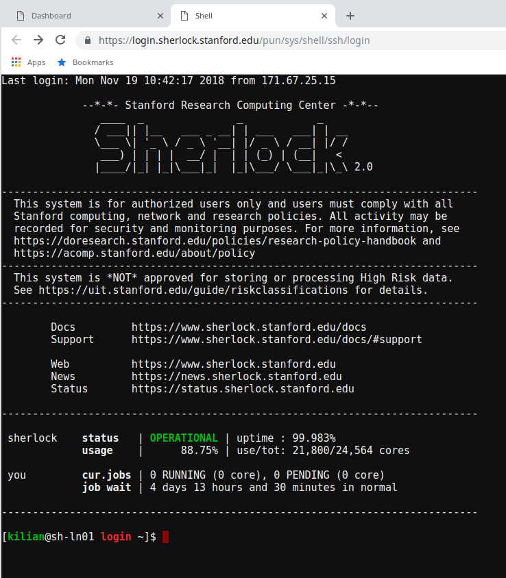

OnDemand
Introduction#
The Sherlock OnDemand interface allows you to conduct your research on Sherlock through a web browser. You can manage files (create, edit and move them), submit and monitor your jobs, see their output, check the status of the job queue, run a Jupyter notebook and much more, without logging in to Sherlock the traditional way, via a SSH terminal connection.
More documentation#
The following documentation is specifically intended for using OnDemand on Sherlock. For more complete documentation about OnDemand in general, please see the extensive documentation for OnDemand created by OSC, including many video tutorials.
Connecting#
Connection information
To connect to Sherlock OnDemand, simply point your browser to https://login.sherlock.stanford.edu
Sherlock OnDemand requires the same level of authentication than connecting to Sherlock over SSH. You will be prompted for your SUNet ID and password, and will go through the regular two-step authentication process.
The Sherlock OnDemand Dashboard will then open. From there, you can use the menus across the top of the page to manage files, get a shell on Sherlock, submit jobs or open interactive applications such as Jupyter Notebooks or RStudio sessions.

To end your Sherlock OnDemand session, click on the "Log Out" link at the top right of the Dashboard window and close your browser.
Getting a shell#
You can get shell access to Sherlock by choosing Clusters > Sherlock Shell Access from the top menu in the OnDemand Dashboard.
In the window that will open, you'll be logged in to one of Sherlock' login nodes, exactly as if you were using SSH to connect. Except you don't need to install any SSH client on your local machine, configure Kerberos or deal with your SSH client configuration to avoid endless two-factor prompts. How cool is that?

Managing files#
To create, edit or move files, click on the Files menu from the
Dashboard page. A dropdown menu will appear, listing your most common
storage locations on Sherlock: $HOME, $GROUP_HOME,
$SCRATCH. $GROUP_SCRATCH and $OAK1.
Choosing one of the file spaces opens the File Explorer in a new browser tab. The files in the selected directory are listed.
Left panel will always display $HOME
No matter which directory you are in, your home directory is displayed in a panel on the left.
There are two sets of buttons in the File Explorer.
-
On the top left, just below the name of the current directory: Those buttons allow you to View, Edit, Rename, Download, Copy, Paste (after you have moved to a different directory) or Delete a file, or you can toggle the file selection with (Un)Select All.
-
At the top of the window, on the right side:
Button Function Go To Navigate to another directory or file system Open in Terminal Open a terminal window on Sherlock in a new browser tab New File Create a new, empty file New Dir Create a new subdirectory Upload Copy a file from your local machine to Sherlock Show Dotfiles Toggle the display of dotfiles (files starting by a ., which are usually hidden)Show Owner/Mode Toggle the display of owner and permisson settings
Creating and editing jobs#
You can create new job scripts, edit existing scripts, and submit them to the scheduler throught the Sherlock OnDemand interface.
From the top menus in the Dashboard, choose Jobs > Job Composer. A Job Composer window will open. There are two tabs at the top: Jobs and Templates.
In the Jobs tab, you'll find a list of the job you've submitted through OnDemand. The Templates tab will allow you to define your own job templates.
Creating a new job script#
To create a new job script. you'll need to follow the steps below.
Select a template#
Go to the Jobs tab in the Jobs Composer interface. You'll find a default template there: "Simple Sequential Job".
To create a new job script, click the blue New Job > From Default Template button in the upper left. You'll see a green message at the top of the page indicating: "Job was successfully created".
At the right of the Jobs page, you can see the Job Details, including
the location of the script and the script name (by default, main_job.sh).
Under that, you will see the contents of the job script in a section named
Submit Script.

Edit the job script#
You'll need to edit the job script, so it contains the commands and workflow that you want to submit to the scheduler.
If you need more resources than the defaults, you must include options to change them in the job script. For more details, see the Running jobs section.
You can edit the script in several ways: * click the blue Edit Files button at the top of the Jobs tab in the Jobs Composer window, * in the Jobs tab in the Jobs Composer window, find the Submit Script section at the bottom right. Click the blue Open Editor button.
After you save the file, the editor window remains open, but if you return to the Jobs Composer window, you will see that the content of your script has changed.
Edit the job options#
In the Jobs tab in the Jobs Composer window, click the blue Job Options button. The options for the selected job such as name, the job script to run, and the account it run under are displayed and can be edited. Click Save or Cancel to return to the job listing.
Submitting jobs#
To submit a job, select in in the Jobs tab in the Jobs Composer page. Click the green Submit button to submit the selected job. A message at the top of the window shows whether the job submission was successful or not. If it is not, you can edit the job script or options and resubmit. When the job is submitted successfully, the status of the job in the Jobs Composer window will change to Queued or Running. When the job completes, the status will change to Completed.

Monitoring jobs#
From the Dashboard page, The Jobs > Active Jobs top-level menu will bring you to a live view of Sherlock's scheduler queue. You'll be able to see all the jobs currently in queue, including running and pending jobs, as well as eome details about individual jobs.

At the bottom of the detailled view, you'll find two button that will bring you to the directory where that job's files are located, either in the File Manager or in a Shell session.
Interactive applications#
One of the main features of Sherlock OnDemand is the ability to run interactive applications difrectly from the web interface, without leaving your web browser.
Jupyter Notebooks#
You can run Jupyter Notebooks (using Python, Julia or other languages) through Sherlock OnDemand.
Some preliminary setup may be required
Before running your first Jupyter Notebook with IJulia, you'll need to
run the following steps (this only need to be done once):
$ ml julia
$ julia
julia> using Pkg;
julia> Pkg.add("IJulia")
When you see the message that IJulia has been installed, you can end your
interactive session.
To start a Jupyter session from Sherlock OnDemand:
-
Select Interactive Apps > Jupyter Notebook from the top menu in the Dashboard page,
-
In the screen that opens, specify the different parameters for your job (time limit, number of nodes, CPUs, partition to use, etc.). You can also choose to be notified by email when your notebook start.
-
Click the blue Launch button to start your JupyterHub session. You may have to wait in the queue for resources to become available for you.
-
When your session starts, you can click on the blue Connect to Jupyter button to open your Jupyter Notebook. The Dashboard window will display information about your Jupyter session, including the name of the compute node it is running on, when it started, and how much time remains.

-
In your new Jupyter Notebook tab, you'll see 3 tabs: Files, Running and Clusters.
By default, you are in the Files tab, that displays the contents of your
$HOME directory on Sherlock. You can navigate through your files there.
Under the Running tab, you will see the list of all the notebooks or terminal sessions that you have currently running.
-
You can now start a Jupyter Notebook:
- To open an exiting Jupyter Notebook, which is already stored on Sherlock, navigate to its location in the Files tab and click on its name. A new window running the notebook will open.
- To create a new Jupyter Notebook, click on the New button at the top right of the file listing, and choose the kernel of your choice from the drop down.
To terminate your Jupyter Notebook session, go back to the Dashboard, and click on the My Interactive Sessions in the top menu. This will bring you to a page listing all your currently active interactive session. Identify the one you'd like to terminate and click on the red Delete button.
RStudio#
To run RStudio via Sherlock OnDemand:
-
Select Interactive Apps > RStudio Server from the top menu in the Dashboard page,
-
In the screen that opens, specify the different parameters for your job (time limit, number of nodes, CPUs, partition to use, etc.). You can also choose to be notified by email when your notebook start.
-
Click the blue Launch button to start your RStudio session. You may have to wait in the queue for resources to become available.
-
When your session starts, click the blue Connect to RStudio Server button. A new window opens with the RStudio interface.

Tensorboard#
To run Tensorboard via Sherlock OnDemand:
-
Select Interactive Apps > Tensorboard from the top menu in the Dashboard page,
-
In the screen that opens, specify the different parameters for your job (time limit, number of nodes, CPUs, partition to use, etc.). You can also choose to be notified by email when your notebook start.
-
Click the blue Launch button to start your Tensorboard session. You may have to wait in the queue for resources to become available.
-
When your session starts, click the blue Connect to Tensorboard button. A new window opens with the Tensorboard interface.

-
if you have access to the Oak storage system. ↩